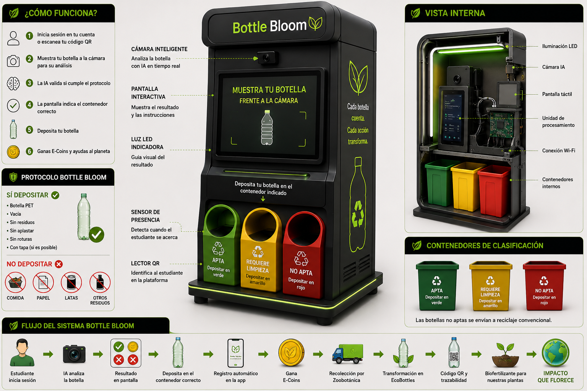
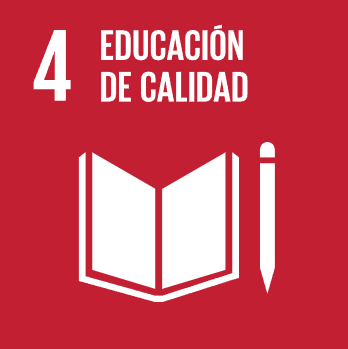
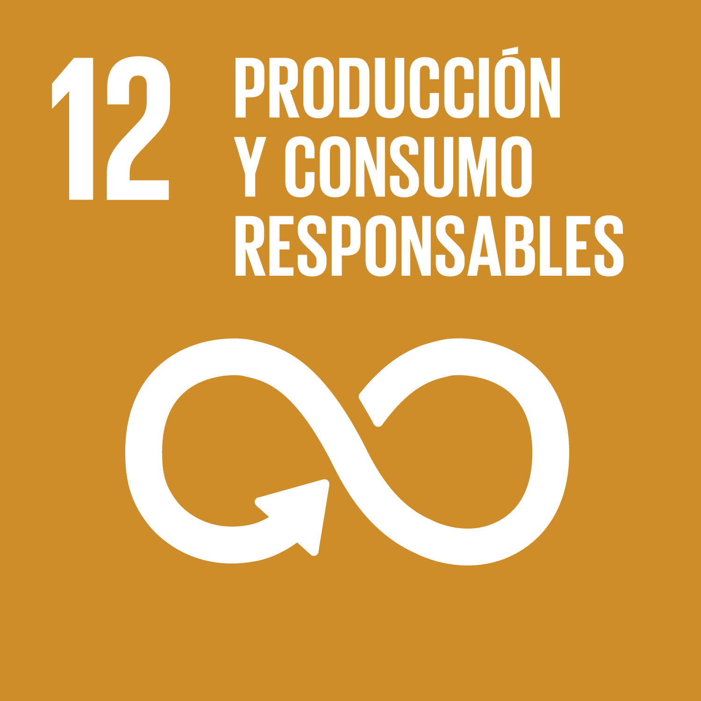
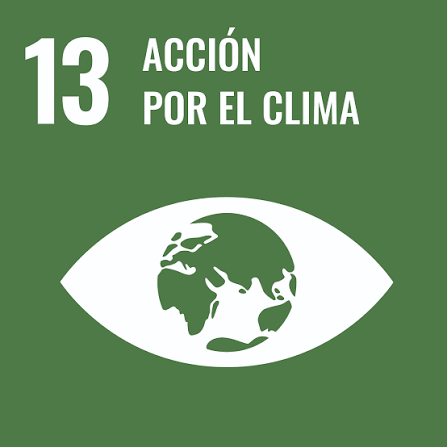

La falta de separacion reduce la posibilidad de reutilizar botellas y aumenta la contaminacion.
Transformamos botellas en vida.
BottleBloom utiliza IA, QR y Blockchain para convertir botellas PET en EcoBottles con biofertilizante y generar impacto real en la comunidad.

Problema ambiental
Muchas botellas PET terminan como residuos sin trazabilidad, sin clasificacion clara y sin una segunda vida util dentro de la comunidad educativa.
Reciclar suele sentirse lejano cuando no existe recompensa, seguimiento o impacto visible.
Sin registro digital, cada botella pierde su historia ambiental y su valor educativo.
El residuo puede convertirse en EcoBottle, aprendizaje, biofertilizante y comunidad.
Solucion BottleBloom
Una web app conectada a una estacion inteligente que clasifica, registra, recompensa y transforma botellas en experiencias ecologicas medibles.
La botella se analiza segun tipo, estado, color y potencial de reutilizacion.
Las botellas aptas pasan a limpieza y llenado con biofertilizante organico.
Cada EcoBottle recibe una identidad digital con historial e impacto.
La participacion se recompensa con monedas, retos, rachas y coleccionables ecologicos.

Como funciona
El flujo completo de BottleBloom desde el escaneo hasta el impacto ambiental.

ODS vinculadas
BottleBloom se vincula con educacion, comunidades sostenibles, consumo responsable y accion climatica.

Educacion de calidadAprendizaje ambiental practico con tecnologia y participacion estudiantil.
 Ciudades y comunidades sostenibles
Ciudades y comunidades sosteniblesAcciones comunitarias que reducen residuos y promueven cultura ambiental.

Produccion y consumo responsablesReutilizacion de botellas PET mediante economia circular y trazabilidad.

Accion por el climaMedicion del CO2 evitado y habitos sostenibles con impacto visible.
Equipo BottleBloom
Un equipo estudiantil que combina investigacion, diseno, comunicacion y liderazgo para convertir reciclaje en impacto real.
 Pamela RubioLider
Pamela RubioLider Emily OrozcoSecretaria
Emily OrozcoSecretaria Thomas HermidaExpositor
Thomas HermidaExpositor Emanuel GerardoDisenador
Emanuel GerardoDisenador Juan Diego MorenoInvestigador
Juan Diego MorenoInvestigador